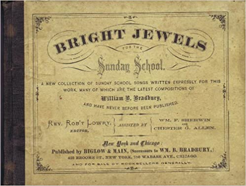

0440
He Leadeth Me
_Gilmore
天父領我
AUGHTON ▲
|
|
|
|
1 He leadeth me: O blessed thought!
O words with heavenly comfort fraught!
Whate'er I do, where'er I be,
still 'tis God's hand that leadeth me.
Refrain:
He leadeth me, he leadeth me;
by his own hand he leadeth me:
his faithful follower I would be,
for by his hand he leadeth me.
2 Sometimes mid scenes of deepest gloom,
sometimes where Eden's flowers bloom,
by waters calm, o'er troubled sea,
still 'tis God's hand that leadeth me. Refrain
3 Lord, I would clasp thy hand in mine,
nor ever murmur nor repine;
content, whatever lot I see,
since 'tis my God that leadeth me. Refrain
4 And when my task on earth is done,
when, by thy grace, the victory's won,
e'en death's cold wave I will not flee,
since God through Jordan leadeth me. Refrain
Psalter Hymnal, (Gray)
|
天父領我，我深喜歡！蒙主引導心中平安！
無論日夜動靜起坐，有主聖手時常領我。
天父領我日日領我，天上慈父親手領我！
惟願跟隨不離右左，因蒙主恩親手領我。
有時遭遇困苦憂傷，有時大得喜樂安康；
似海翻騰如山穩妥，或危或安天父領我。
天父領我，日日領我，天上慈父親手領我！
惟願跟隨不離右左，因蒙主恩親手領我。
我願緊握恩主聖手，甘心樂意隨主行走；
遇禍遇福兩般皆可，因主我父聖手領我。
天父領我，日日領我，天上慈父親手領我！
惟願跟隨不離右左，因蒙主恩親手領我。
到時行完一世路程，靠託主恩完全得勝；
死如冷河我不怕過，獨賴天父至終領我。
天父領我日日領我，天上慈父親手領我！
惟願跟隨不離右左，因蒙主恩親手領我。
|
|
https://www.zanmeishi.com/tab/25993.html
http://www.xueshengshi.com/?attachment_id=620%20

https://hymnary.org/hymn/HFLC1974/439 |
| |
|
https://www.youtube.com/watch?v=3j9tCDWdfOQ&t=1s [Gracias Choir] He
Leadeth Me
https://www.youtube.com/watch?v=5J7xUcMay3E&t=3s He Leadeth Me
Samonte
https://youtu.be/sVgHneowNb8
He Leadeth Me | Help in Daily Living | Fountainview Academy
https://youtu.be/sVgHneowNb8
http://www.hymncompanions.org/Jan/06/stream.php
天父領我,我深喜歡！蒙主引導心中平安！
無論日夜動靜起坐，有主聖手時常領我。
有時遭遇困苦憂傷，有時大得喜樂安康；
似海翻騰,如山穩妥，或危或安天父領我。
我願緊握恩主聖手，甘心樂意隨主行走；
遇禍遇福兩般皆可，因主我父聖手領我。
到時行完一世路程，靠託主恩完全得勝；
死如冷河我不怕過，獨賴天父至終領我。
（副歌）
天父領我，日日領我，天上慈父親手領我！
惟願跟隨不離右左，因蒙主恩親手領我。
 (請點耳機收聽)
(請點耳機收聽)
「天父領我」的作者紀而摩（Joseph H. Gilmore, 1834-1918）出生于波士頓，
父親是新罕布夏州州長。他在良好的環境中成長，讀大學及神學院時，都成績優異。他是浸信會一位傑出的牧師，也是教授和作家。
1862年初正值美國南北戰爭，人心惶惶，當時紀而摩是即將畢業的神學生，他被費城浸信會邀請，帶領週三的祈禱會，那天他講論詩篇廿三篇：「耶和華是我的牧者……領我到可安歇的水邊……。」特別強調「天父領我」。
以他的聰明、學識、家世、環境，他盡可作一領導者，無需他人引領，但在實際生活體驗中，他深覺人的能力有限，必需依靠神的帶領才能經過一切憂患。
會後他在一執事家作客，大家繼續討論剛才的信息，神是如此的慈愛，在日常生活中奇妙地帶領信徒們。
紀而摩隨即提筆寫下這首聖詩。回家後，把草稿交給他妻子。她讀後就悄悄地把它投寄波士頓教會的報紙。
事隔三年，紀而摩去羅徹斯特城講道，會前他隨手翻閱一本新編的聖詩，赫然發現這一首詩，當時他驚喜難喻。
紀而摩終生在浸信會牧會。他在父親出任州長時，曾是他私人秘書，復在大學及神學院教希伯來文、邏輯學、修辭學及英國文學，並出版相關的教科書，也寫有其他聖詩，但最獲贊譽的卻是這首他在廿八歲時寫的聖詩。
幾乎各國的聖詩集都選有此詩。 1926年，美國協和煤氣公司為景仰作者，在費城該公司大樓中設一美麗銅牌，紀念這首不朽名歌及作者。
本詩歌中文版有的譯為「耶穌領我」。
「禱告良辰」的作曲者白德瑞（William B. Bradbury，見一月十四日）讀到這首詩時，十分喜愛，便譜上樂曲，編入主日學課本中，遂使它迅速廣傳。
白瑞德極力推展主日學事工，並為教會主日學課本作曲，故他被譽為「主日學音樂之父」 。
中英文聖詩集參考
英文歌名 He
Leadeth Me
頌主新歌 491
頌主新歌(中英文雙語本) 491
教會聖詩 418
生命聖詩 317
新聖詩 105
歡欣讚美 690
聖徒詩集 479
聖詩 188
台語聖詩 296
讚美 301
世紀讚頌 389
讚美詩(新編) 258
校園詩歌II 206
简介（二） （来源：《岁首到年终》）
Joseph H.Gilmore, 1834 – 1918
耶和华是我的牧者，我必不至缺乏。祂使我躺卧在青草地上，领我在可安歇的水边。
祂使我的灵魂苏醒，为自己的名引导我走义路。（诗23:1－3）
即将走完世途的年老雅各，回首过去的岁月，感怀神的眷顾引导，临终时称他所事奉的神为「一生牧养我直到今日的神」。神是我们的牧者，带领我们走一生的旷野路。虽然有时软弱受迷惑偏行己路，但祂仍耐心地以爱心管教我们，领我们归羊圈。人生经历愈多，愈能体会神的引导是何等真实稳妥。牧会二十年，回顾其中最甘甜的乃来自群羊的爱心情怀。同样地，其中最伤痛的亦来自某些顽羊的顶撞来到大牧者–神的面前，扪心自问，我是否也曾伤天父的心，使圣灵担忧过？
本诗作于1862年3月26日，Joseph
Gilmore叙述，说当天晚上他受邀在费城第一浸信会讲道，以诗篇23篇为主题。会在执事Watson先生之宅交谊，整个晚，上他一直被「天父带领」的思想所感动，于是拿起铅笔来就写下了此诗，交给他妻子，然后就忘记了此事。没想到，他妻子将此诗投稿至Watchman
and Reflector杂志并被注销。三年后，他到纽约Rochester的第二浸信会讲道，才惊讶发现作品「天父领我」已被出版收录在圣诗里。
Joseph H.Gilmore出生于波士顿，是New
Hampshire州的州长。他毕业于Newton神学院，牧养几个浸信会。以28之龄，着此圣诗并受邀在费城讲道，在当时实在罕见。
1 天父领我，我深喜欢！蒙主引导心中平安！
无论日夜动静起坐，有主圣手时常领我。
2 有时遭遇困苦忧伤，有时大得喜乐安康；
似海翻腾，如山稳妥，或危或安天父领我。
3 到时行完一世路程，靠托主恩完全得胜；
死如冷河我不怕过，独赖天父至终领我。
＊如果我们相信神，却不相信祂能引导我们度过今天迫在眉睫的磨难，
这是最可悲，愚不可及的了。──司布真
https://ocbf.ca/2019/he-leadeth-me/
https://youtu.be/oyN18LID4Rc
《聖經》裡，大衛寫的詩篇第23篇是每一個基督徒非常熟悉喜愛的經文：「耶和華是我的牧者，我必不致缺乏。祂使我躺臥在青草地上，領我在可安歇的水邊。祂使我的靈魂甦醒，為自己的名引導我走義路。我雖然行過死蔭的幽谷，也不怕遭害，因為祢與我同在；祢的杖，祢的竿，都安慰我。在我敵人面前，祢為我擺設筵席；祢用油膏了我的頭，使我的福杯滿溢。我一生一世必有恩惠慈愛隨著我；我且要住在耶和華的殿中，直到永遠。」後世有許多人專門為這段著名的詩篇譜寫了許多優美的歌曲，可卻有這樣的一首聖詩，雖然其寫作的背景也是與這經文有關，但全詩直接引用的經文卻僅僅是其中的三個字，而且這首詩歌的投稿、發表、譜曲以及流傳過程居然連作者本人都是在三年後方才知道。這首詩歌就是「天父領我」(He
leadeth me，中文直譯：祂帶領我)，其作者是美國十九世紀浸信會的一位牧師，名字叫約瑟夫.吉爾摩（Joseph
H. Gilmore, 1834-1918）。
吉爾摩出生於1834年出生於波士頓一個良好的家庭，父親過去曾經是一名鐵路建築商和地區鐵路總監，後從政，先後擔任過新罕布夏州的議員和州長。吉爾摩自幼就非常聰明好學，完成高中教育後他順利考上著名的布朗大學，在該大學文學院先後取得學士和碩士學位之後，他又繼續在布朗的牛頓神學研究所研讀神學並取得學位。神學院畢業後他成為波士頓浸信會的牧師。這首詩歌就是他從神學院畢業後的第二年寫的，創作的年份是1862年。（下圖為布朗大學建築物）
根據他本人的回憶，那次他是受費城第一浸信會的邀請前往該教會做兩個星期的佈道。期間的那個星期三晚上該教會有一個禱告會。當時美國因奴隸制而引起的南北戰爭已經爆發，屬於北方陣線的費城正處在極度動盪和不安之中，因此他選擇了《聖經》詩篇的廿三篇作為當日講道的題目。這段經文過去從不同的角度他曾經講過三四次，可是那天他準備的主題卻是著重在整段經文的第二節，即「祂領我到可安歇的水邊」這句話，特別是經文開始的前“祂領我”這三個字讓他對凡事有了上帝的引領必能得到保守和祝福產生了強烈的共鳴和信心。當晚以這個主題所做的证道非常成功，感動激勵了所有台下的人。聚會結束後 他和妻子回到了教會安排接待他們的那位執事的家中；入睡前主賓還在客廳裏閒聊，但吉爾摩的心緒依然停留在有天父引領的幸福情感之中，於是當場他拿起一支鉛筆在依然站立的情況迅速在一張紙上寫下這首詩，寫完後即隨手把草稿給了身邊的妻子瑪麗，此後就再也沒去想它。可是沒想到瑪麗讀了這首詩後因非常喜歡，就自做主張把它投寄給波士頓的「守望和反思者」雜誌。可能是考慮到丈夫還是一名初出茅廬的新傳道人，瑪麗投稿時用了一個根本不存在的單詞“Contoocook”來作為署名。（下圖為費城第一浸信會教堂原址的照片）
詩歌寄出後發表在當年的12月4日出版的刊物上。接著有一位名叫威廉.白德瑞（William
B. Bradbury）著名聖樂家讀到這首詩，因為十分喜愛，便給它譜上了樂曲，並且編入到自己的主日學教課本中，遂使它開始得以流傳，但是白瑞德也不知道歌詞的作者究竟為何人。直到三年後的某一天，吉爾摩應邀去羅徹斯特城的第二浸信會講道，這家教會正在考慮聘請他作為牧師。講道前他順手拿起他們教會一本新編的聖詩，想瞭解他們教會現在唱的是什麼詩歌，可沒想到居然在書裏發現了自己寫的這首詩歌，而且已經被名人譜上曲，成為許多教會敬拜時所唱的詩歌，當時他的驚訝程度可想而知！回去後他馬上詢問妻子當年是怎麼回事，瑪麗回答道：“那時我覺得你這首詩歌對鼓勵安定人心會很有幫助，所以我就把它投稿了，但是我也沒想到會威廉.白瑞德會把它譜上了曲子。”

這裏我想順便簡單介紹一下為這首詩歌譜曲的威廉.白瑞德。他是美國福音詩歌歷史上一位著名的作曲家和器樂家，十七歲進入波士頓知名的洛厄爾·梅森音樂學院學習，後又專門前往古典音樂的大本營德國進修音樂，回國後在紐約的浸信会教會事奉。當時美國的主日學運動方興未艾，威廉對此貢獻良多，他打破教會傳統把敬拜詩歌引入主日學事工，并且創作了許多優美的赞美诗歌，甚至因此與著名聖樂家桑基并立一起被稱之為主日學音樂之父。聖樂史上「禱告良辰」、「堅如磐石」（The
Solid Rock）、「救世主像牧人領導我們」（Savior,
Like a Shepherd, Lead Us），「耶穌愛我」（Jesus
Loves Me）等著名詩歌的曲譜都是出於他手。（下圖為當年威廉.白瑞德為紐約芝加哥教會編寫的主日學歌曲封面）

有了白瑞達譜曲“加持”後的这首「天父領我」很快迅速地傳遍了世界，成為一首廣人們喜愛的“流行聖詩”。其傳播之遠的一個有趣例證是，在第一次世界大戰期間，同盟國士兵們無意中在一個叫波利尼西亞的南太平洋小國裏發現，當地所有的原住民都把這首「天父領我」當做最受他們歡迎和喜歡的聖詩！（下圖為波利尼西亞原住民的圖騰）
我們再回到介紹吉爾摩本人。聖詩作者中很少像他那樣具有如此多方面才華和能力的人。除了他作為基督徒在浸信會長期做過牧師外，他的一生中還曾做過編輯，在布朗大學神學院教授過希伯來文課；特別是他自1868年起就被羅切斯特大學聘請作為教授，在英語系擔任邏輯學、修辭學及英國文學等課程的教學，他寫的「英美文學綱要」等幾本書籍還被該校選作科教書。除此以外，在他父親當選為新罕布夏州州長的1863-1865年期間，他曾經還出任過州長的私人秘書一職。然而究其一生，他最受人們讚譽和紀念的還是他在年輕時寫的這首聖詩！1926年費城第一浸信會所在的街道位置拆遷，在原地基礎上新蓋起的辦公大樓為美國協和煤氣公司所有；出於對這首詩歌及詩歌作者的敬仰，該公司刻意在樓裏設立一個醒目的紀念銅牌，銅牌中間銘刻著這首詩歌的標題「祂領我」（He
leadeth me）,以紀念這首著名聖詩及其作者。(上右圖為晚年在羅契斯特大學教學時的吉爾摩）
現在讓我們一起來欣賞這首詩歌：
天父領我
（He Leadeth
Me）
天父領我,我深喜歡，蒙主引導心中平安；
無論日夜動靜起坐，有主聖手時常領我。
有時遭遇困苦憂傷，有時大得喜樂安康；
似海翻騰,如山穩妥，或危或安天父領我。
我願緊握恩主聖手，甘心樂意隨主行走；
遇禍遇福兩般皆可，因主我父聖手領我。
到時行完一世路程，靠托主恩完全得勝；
死如冷河我不怕過，獨賴天父至終領我。
副歌
天父領我，日日領我，天上慈父親手領我！
惟願跟隨不離右左，因蒙主恩親手領我。
親愛的朋友，我們每個人在自己的人生道路上的各個階段上往往需要有人指引。在孩提時代我們需要父母親的手牽引著我們的手丫丫學步；在我們在讀書求學的各階段需要我們老師們的解惑指導；當我們剛進入職場，我們需要上級及前輩的格外帶領和幫助；即使我們已經年邁退休，我們要融入到當地的老人群體中也最好有熟人攜帶引領….；更不要說當我們在生活中遇到數不盡的各種難關和考驗的時候，我們太需要能夠得到他人切實的協助，指引我們走出困境。可是人生中卻有太多不如意的時刻，當我們特別需要有人引領時我們卻往往一籌莫展，坐困愁城，無一人可依靠信賴，甚至有時候絕望到惶惶不可終日的地步。然而，如果我們早日認識我們在天上的父，把我們的生命交托給那位恩主，那麼我們的人生路上可以像這首詩歌所說的，無論是“遇禍遇福”、“或危或安”，無論我们的心靈有多大的“困苦憂傷”，我們必能因有祂的“親手”引領而平安度過；而且靠著祂信實的恩典我们必在天路的歷程中“完全得勝”，由祂親自引領走過死陰幽谷，直到我們再見主耶稣榮光的那一天！親愛的還沒有信主的慕道朋友們，在如今因新冠疫情整個世界瀰漫著悲觀失望的特殊時刻，在每一個的生命健康遭受到病毒這個死神威脅的緊急關頭，你是否願意把你的手交給耶穌，由祂親自來牽引你，賜給你屬天的心靈平安，讓你的生命通過祂的指引從此與永恆和永生連接？你，願意嗎？


https://hymnary.org/text/he_leadeth_me_o_blessed_thought
On a Wednesday evening, Joseph Gilmore was preaching at a mid-week prayer
service on the topic of Psalm 23. He wrote later, “I set out to give the people
an exposition of the 23rd Psalm, but I got no further than the words ‘He leadeth
me.’ Those words took hold of me as they had never done before. I saw in them a
significance and beauty of which I had never dreamed…At the close of the meeting
a few of us kept on talking about the thoughts which I had emphasized; and then
and there, on a back page of my sermon notes, I penciled the hymn just as it
stands today, handed it to my wife, and thought no more of it…She sent it
without my knowledge to the Watchman and Reflector magazine, and there it
first appeared in print December 4, 1862” (Psalter Hymnal Handbook, 616).
Lectio Devina is a common devotional practice in which one spends a significant
amount of time reflecting and meditating on one verse of Scripture, or a short
passage. It is amazing what the Holy Spirit can say to us when we take time to
listen and ponder, but also, like Gilmore, what we hear when we least expect it,
such as when we read through as familiar a passage as Psalm 23.
Text:
Gilmore’s text remains largely unchanged from the day it was penned. Most
hymnals include four stanzas and a chorus, though some hymnals, such as Worship
and Rejoice and Sing With Me leave out the original second verse,
“Sometimes mid scenes of deepest gloom….” Like the psalm after which this hymn
was written, the verses declare our trust in God, wherever we are – whether in
stormy seas, Eden’s garden, or on death’s door. Each verse provides a different
scenario in which we need God to guide us, and the refrain acts as a response in
which we profess that God does guide us and will be our Shepherd at all times.
Tune:
The tune AUCHTON (HE LEADETH ME) was written by William Bradbury for Gilmore’s
text after seeing it in the Boston Watchman and Reflector. He arranged
the hymn into a stanza/refrain structure and added the last line of the refrain
to fit his tune. Like much of Bradbury’s work, it is a simple tune that can be
sung in a variety of ways. Soloists might prefer to sing the hymn at a slower
tempo, but when sung by the congregation, the tempo should clip along nicely
else it would drag. It is also tempting to add fermatas to the end of the second
and third lines, but while this might be okay for a soloist, it can be confusing
for a congregation, and would need a lot of emphasis and direction from the
worship leader.
When/Why/How:
This hymn can be sung at any time during the liturgical year, because there are
moments every day when we must profess our trust in God. Specific services where
this hymn would be appropriate are services of prayer and healing, services with
a theme of God’s hand at work in the world, or questioning why bad things
happen, or when a passage on Jesus as the Good Shepherd is used as the sermon
text. It would be a very fitting hymn of response to the reading of Psalm 23,
the Prayers of the People, or the Assurance of Pardon.
https://www.umcdiscipleship.org/resources/history-of-hymns-he-leadeth-me-o-blessed-thought
By C. Michael Hawn
“He Leadeth Me: O Blessed Thought,"
by Joseph Gilmore;
The United Methodist Hymnal, No. 128
He leadeth me: O blessed thought!
O words with heavenly comfort fraught!
Whate'er I do, where'er I be,
Still 'tis God's hand that leadeth me.
“He Leadeth Me” by American Joseph Gilmore (1834-1918) was birthed out of a
particular struggle in American history. This hymn was composed in 1862 during
the Civil War, a time of upheaval and insecurity. The author was preaching at
First Baptist Church in Philadelphia soon after his ordination.
Dr. Carlton R. Young, The United Methodist Hymnal editor, cites Gilmore’s
recollections on the hymn's formation: “I set out to give the people an
exposition of the 23rd Psalm, which I had given before on three or four
occasions, but this time I did not get further than the words ‘He Leadeth Me.’
Psalm 23:2, ‘he leadeth me beside the still waters,’ became the theme of the
song” (Young, 1993, 390).
Subsequently, upon the initiative of Glimore’s wife and without the author’s
knowledge, the text appeared in the Boston newspaper Watchman and Reflector
(Dec. 4, 1862) under the rather unusual and unexplained pseudonym “Contoocook.”
The famous gospel song composer William Bradbury (1816-1868) included these
words anonymously with his own tune in his collection The Golden Censer (1864).
Bradbury is credited with adding the third line to the famous refrain (in bold
italics):
He leadeth me! He leadeth me!
By his own hand he leadeth me;
His faithful follower I would be,
For by his hand he leadeth me.
Joseph H. Gilmore, the son of Joseph A. Gilmore, governor of New Hampshire,
received his education from Phillips Academy, Andover, Massachusetts, Brown
University, Providence, Rhode Island (1858), and Newton Theological Seminary
(1861) where he taught Hebrew. An ordained Baptist minister (1862), Gilmore
became a professor after serving churches in Philadelphia, New Hampshire, and
New York. He was also a professor of English at the University of Rochester from
1868-1911. A prolific writer for newspapers and periodicals, Gilmore also
authored three books in his academic field: The Art of Expression (1876) and
Outlines of English and American Literature (1905), as well as a book of poetry,
He Leadeth Me, and Other Religious Poems (1877).
Working as his father’s private secretary during the Civil War, he also edited
the Concord, New Hampshire Daily Monitor. Gilmore provided further information
on the historical context of this hymn:
It was the darkest hour of the Civil War. I did not refer to that fact—that is,
I don't think I did—but it may subconsciously have led me to realize that God’s
leadership is the one significant fact in human experience, that it makes no
difference how we are led, or whither we are led, so long as we are sure God is
leading us.
http://www.hymntime.com/tch/htm/h/l/e/hleademe.htm
Stanza 2 of the hymn may suggest the ethos of the national
crisis. Drawing on Psalm 23:4a; “Yea, though I walk through the valley of
the shadow of death, I will fear no evil” (KJV), Gilmore begins: “Sometimes mid
scenes of deepest gloom...”
In stanza 3, the poet offers a particular theological
interpretation of Psalm 23:4b: ”thy rod and thy staff they comfort me.”
In doing so, he reflects on the concept of complete submission to God’s will
found in many gospel songs of this era:
Lord I would place my hand in Thine,
nor ever murmur nor repine;
content, whatever lot I see,
since ‘tis my God that leadeth me.
Consider the similarity between this sentiment and the first stanza of “When
Peace Like a River” (1873) by Horatio Spafford (1828-1888): “... whatever my
lot, thou hast taught me to say, / ‘It is well, it is well with my soul.’”
Or note “Blessed Assurance” (1873) by Fanny Crosby (1820-1915), in which the
poet says: “Perfect submission, all is at rest, / I in my Savior am happy and
blest...“ (stanza 3).
Psalm 23:6, “Surely goodness and mercy shall follow me all the days of my life:
and I will dwell in the house of the LORD forever” (KJV), provides a basis for
the final stanza of the hymn, drawing upon the
familiar image of the Jordan River cited throughout Scripture, especially as the
place of Jesus’ baptism (Matthew 2:13) and a place where Jesus often conducted
his ministry (Matthew 4:25; Mark 3:7-8), and ultimately the passageway from this
life to the next:
And when my task on earth is done,
When by thy grace the victory's won,
E'en death's cold wave I will not flee,
Since God through Jordan leadeth me.
As is the case with so many gospel songs, the rhetorical strength of this hymn
lies in the almost incessant repetition of a single thought: “He/God leadeth
me.” When the five quotations of this idea in the four stanzas are added to the
three references in the refrain, the singer will have sung “He/God leadeth me” a
total of seventeen times by the time the hymn is concluded!
Gilmore seems to have had a humble nature as a poet and lacked ambition in
promoting his own work. After handing the draft of the poem to his wife who sent
it to The Watchman and Reflector under a pseudonym, Gilmore thought no more
about it. Gilmore notes, “Three years later I went to Rochester, New York, to
preach as a candidate before the Second Baptist Church. Upon entering the
chapel, I took up a hymnbook, thinking, ‘I wonder what they sing.’ The book
opened up at “’He Leadeth Me,’ and that was the first time I knew that my hymn
had found a place among the songs of the church” (Osbeck, 1982, 87).
When the famous musical evangelist Ira D. Sankey (1840-1908), the musician for
renowned evangelist Dwight L. Moody (1837-1899), included Bradbury’s version of
the hymn in several editions of Sacred Songs and Solos, its fame was assured.
The Salvation Army spread its use throughout Britain when they included it in
several of their collections.
Though Gilmore wrote other hymns, it is this hurriedly penned text written at
age 28 for which he is remembered. The First Baptist Church of Philadelphia was
demolished in 1926. Kenneth Osbeck notes, however, that the words to the first
stanza of Gilmore’s hymn appear on a bronze tablet on the large office building
that replaced the church with the inscription, “in recognition of the beauty and
fame of this beloved hymn, and in remembrance of its distinguished author” (Osbeck,
1982, 88).
FOR FURTHER READING:
“He Leadeth Me (Gilmore)” Accessed October 31, 2017. http://www.hymntime.com/tch/htm/h/l/e/hleademe.htm.
Osbeck, Kenneth W. 101 Hymn Stories. Grand Rapids: Kregel Publications, 1982.
Watson, J. R. and Carlton R. Young. "He leadeth me! O blessed thought." The
Canterbury Dictionary of Hymnology. Canterbury Press, accessed October 15, 2017,
http://www.hymnology.co.uk/h/he-leadeth-me!-o-blessed-thought.
Young, Carlton R. Companion to The United Methodist Hymnal. Nashville: The
United Methodist Publishing House, 1993.
Words: Joseph Henry Gilmore (b. Apr. 29, 1834; d. July
23, 1918)
Music: William Batchelder Bradbury (b. Oct. 6, 1816; d.
Jan. 7, 1868)
Links:
Wordwise Hymns
The Cyber
Hymnal
Note: The unusual story of the origin of this hymn is found in both
of the above links–about a man who wrote a hymn without even knowing it!
Without much question, Psalm 23 is the favourite of all
one hundred and fifty found in the book of Psalms. Perhaps it’s the best
known of any Bible passage, with the possible exception of Matt. 6:9-13,
containing “The Lord’s Prayer.” No wonder many versions and paraphrases
of the text have been turned into hymns. The Cyber Hymnal currently
lists 34, and at a glance I could think of a couple more that might be
included.
Joseph Gilmore’s song doesn’t adhere to the text of Scripture. It’s
more of a meditation on the six verses of the psalm. He begins (in CH-1)
by rejoicing in the blessedness and comfort that it gives him to know
the Shepherd leads him, wherever he goes, whatever he does. It would be
a dreadful thing, to be wandering through the wilderness of this world,
with no one to guide and protect us, no one to take us to the still
waters and green pastures of spiritual nourishment. God is concerned
about that too.
It’s something that moved the heart of Christ to have compassion on
those who came to Him. “Jesus, when He came out [of the boat], saw a
great multitude and was moved with compassion for them, because they
were like sheep not having a shepherd. So He began to teach them many
things” (Mk. 6:34). They certainly had spiritual leaders, but they were
blind leaders of the blind (Matt. 15:12, 14), men who added to the
burdens of those who followed them, rather than relieving them (Matt.
23:4)
These were not true shepherds of the flock. They were too full of
pride and self interest to be concerned about others (cf. Jn. 10:11-13).
It was like “having no shepherd” at all. What a comfort to have, in the
Lord, a wise and gracious Shepherd leading us, a loving and
compassionate Shepherd, who has our best interests in mind!
But does that mean there will never be difficult days, or challenges
to face? Of course not. And Mr. Gilmore’s hymn faces that reality
(CH-2). In addition to traveling through “Eden’s bowers,” and “by waters
still,” there are “scenes of deepest gloom,” and sometimes a “troubled
sea” to navigate. But, even then, the Shepherd leads us on. And even in
the midst of danger and difficulty, we can be victorious. “Thanks be to
God who always leads us in triumph in Christ” (II Cor. 2:14).
Given that we have such a Shepherd, how should we respond? CH-3 and
the refrain indicate that. (Note: the word “repine” means to be fretful
or complaining.)
Lord, I would place my hand in Thine,
Nor ever murmur nor repine;
Content, whatever lot I see,
Since ’tis my God that leadeth me.
He leadeth me, He leadeth me,
By His own hand He leadeth me;
His faithful follower I would be,
For by His hand He leadeth me.
Serenity and contentment in difficult times are only possible when we
trust in the Shepherd, and have confidence in Him. Paul tells us he
“learned…to be content,” indicating it wasn’t a natural thing. But he
could be confident in all circumstances, “through Christ who strengthens
me” (Phil. 4:11, 13).
The psalm speaks of how the Shepherd gives comfort and aid, even in
“the valley of the shadow of death” (Ps. 23:4). His leading does not end
at the grave. It goes on through death, and into the eternal day (CH-4).
The Bible says, “The Lamb who is in the midst of the throne will
shepherd them and lead them to living fountains of waters. And God will
wipe away every tear from their eyes” (Rev. 7:17).
And when my task on earth is done,
When by Thy grace the vict’ry’s won,
E’en death’s cold wave I will not flee,
Since God through Jordan leadeth me.
Questions:
1) Can you list some qualities of our divine Shepherd that make Him the
best shepherd anyone could ever have?
2) What does the parable of the lost sheep (Lk. 15:3-7) add to our
understanding of the Shepherd’s loving care?
Links:
Wordwise Hymns
The Cyber
Hymnal
"HE LEADETH ME"
hymnstudiesblog
"I am the Lord thy God…which leadeth thee by the way that thou shouldest go" (Isa.
48.17)
INTRO.:
A song which encourages us to look to the God of peace who leads us in the way
that we should go is "He Leadeth Me" (#407 in Hymns
for Worship Revised, #50 in Sacred
Selections for the Church). The text was written by Joseph Henry Gilmore,
who was born in Boston, MA, on Apr. 29, 1834. Educated at Philips Academy in
Andover, MA, Brown University in Providence, RI, and Newton Theological
Seminary, where he studied for the Baptist ministry. After his graduation fron
Newton in 1861, he became a Baptist minister, and his first work was at
Fisherville, NY, beginning in 1862. However, before moving to Fisherville, he
substituted for a couple of weeks at the First Baptist Church in Philadelphia,
PA. On Mar. 26, 1862, during the height of the Civil War and when he was just
28, the young Gilmore spoke there on a Wednesday night about Psalm 23.
Afterwards several individuals went home with the family of one of the deacons
named Thomas Wattson, who resided next door. The Gilmores were staying with
them, and the talk centered around the lesson, with its application to their
present situation with the war.
During the conversation, Gilmore took out a pencil and began writing a poem,
taken from his earlier remarks and the present discussion, on the back of his
lesson notes, finishing it in his room later that night. The next morning
he handed it to his wife and forgot it. However, she copied it and a few months
later sent it, without his knowledge, to the Watchman
and Reflector magazine, which printed it. In 1863 the words
were seen and the tune (Smither) was composed by William Batchelder Bradbury
(1816-1868). Making slight alterations, Bradbury published the hymn the
following year in his Golden
Censer hymnbook. For many years it was assumed that Bradbury
added the refrain, but a later examination of Gilmore’s original manuscript
showed that the refrain was the author’s. In 1863 and 1864 Gilmore served
as private secretary to his father, Joseph A. Gilmore, who was then Governor of
New Hampshire. Then in 1865, Gilmore went to Rochester, NY, to "try out" at the
Second Baptist Church. Thumbing through the hymnbook to see what hymns
were being used and to find a suitable one to go with his lesson, he saw for the
first time, much to his surprise, his poem as a song, and only then realized
what his wife must have done.
Gilmore did move to Rochester, where he also served as professor of Hebrew at
the Rochester Theological Seminary beginning in 1867, and later of logic,
rhetoric, and English literature at the University of Rochester beginning in
1868, until his retirement in 1911. Also he wrote editorials for the Concord
Daily Monitor and other papers, and authored several
publications, including The
Art of Expression in 1876, Familiar
Chats on Books and Reading in 1905, and Outlines
of English and American Literature also in 1905, before his
death in Rochester on July 23, 1918. In 1926, the First Baptist Church in
Philadelphia and the house in which the Wattsons had lived were both torn down
to be replaced by a large office building for the United Gas Improvement
Company. In the lobby of the new structure was placed a bronze tablet inscribed
with the words of "He Leadeth Me" and dedicated to the author, who had produced
the famous hymn on that site.
Among hymnbooks published by members of the Lord’s church during the twentieth
century for use in churches of Christ, the song appeared in the 1921 Great
Songs of the Church (No. 1) and the 1937 Great
Songs of the Church No. 2 both edited by E. L. Jorgenson; the
1935 Christian
Hymns (No. 1), the 1948 Christian
Hymns No. 2, and the 1966 Christian
Hymns No. 3 all edited by L. O. Sanderson; the 1963 Abiding
Hymns edited by Robert C. Welch; and the 1963 Christian
Hymnal edited by J. Nelson Slater. Today it may be found
in the 1971 Songs
of the Church, the 1990 Songs
of the Church 21st C. Ed., and the 1994 Songs
of Faith and Praise all edited by Alton H. Howard; the
1978/1983 Church
Gospel Songs and Hymns edited by V. E. Howard; the 1986 Great
Songs Revised edited by Forrest M. McCann; and the 1994 Praise
for the Lord edited by John P. Wiegand; in addition to Hymns
for Worship, Sacred
Selections, and the 2007 Sacred
Songs of the Church edited by William D. Jeffcoat.
This hymn exhorts us to follow God’s leading in our lives.
I. In stanza 1, we are impressed with the need for God’s leadership
"He leadeth me! O blessed thought! O words with heavenly comfort fraught!
Whate’er I do, where’er I be, Still ’tis God’s hand that leadeth me."
A. The idea that "He leadeth me" is obviously based on scripture: Psa. 23.1-2
B. And the thought that God leads us is filled with heavenly comfort: 2 Cor.
1.3-4
C. Because He leads us, whatever we do or wherever we be, we have nothing to
fear: Isa. 41.13
II. In stanza 2, we are reminded that regardless of what happens in life, we can
always look to God for help
"Sometimes ‘mid scenes of deepest gloom, Sometimes where Eden’s bowers bloom,
By waters still, o’er toubled sea, Still ’tis His hand that leadeth me."
A. Sometimes we find ourselves in scenes of deepest gloom: cf. Psa. 27.11-14
B. Other times, we find ourselves in times of joy and bliss as if we were
resting where Eden’s bowers bloom: cf. Gen. 2.8-9
C. However, God has promised to be our Helper, so that again we will have
nothing to fear: Psa. 118.6
III. In stanza 3, we are encouraged to clasp the Lord’s hand in ours
"Lord, I would clasp Thy hand in mind, Nor ever murmer nor repine,
Content, whatever lot I see, Since ’tis my God that leadeth me."
A. We understand the idea of clasping God’s hand in ours as symbolic of the
deep and abiding trust that the Lord wants us to have in Him: Ps. 139.9-10
B. With this kind of trust, there should never be anything about which we would
murmer or repine: 1 Cor. 10.10
C. Rather, this trust will help us learn to be content with such things as we
have: Phil. 4.11, 2 Tim. 6.6-8, Heb. 13.5
IV. In stanza 4, we look forward to the time when God will lead us through
Jordan
"And when my task on earth is done, Why, by Thy grace, the victory’s won,
E’en death’s cold wave I will not flee, Since God through Jordan leadeth me."
A. The time will come when our task on earth is done: 2 Tim. 4.6, Heb. 9.27
B. If we have served the Lord faithfully during our lives, we can anticipate
with eagerness the victory won: 1 Cor. 15.54-57, 1 Jn. 5.4
C. And then, we can trust in God to lead us in the way of everlasting life:
Psa. 139.23-24
CONCL.: T
he chorus continues to remind us of the importance of having God’s leadership as
we journey on this earth.
"He leadeth me, He leadeth me, By His own hand He leadeth me;
His faithful follower I would be, For by His hand He leadeth me."
One of the things that I so desperately need to do is to turn to God for peace
and guidance by learning to say, "He Leadeth Me."
https://hymnstudiesblog.wordpress.com/2008/06/13/quothe-leadeth-mequot/